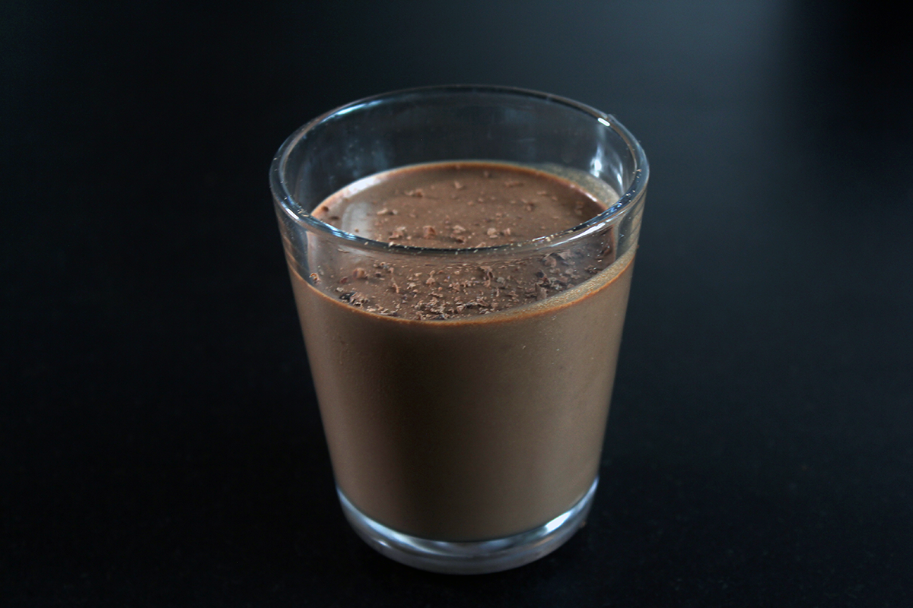

Chokolademousse
6 stk.

Ingredienser
Sådan gør du
1. Smelt chokoladen sammen med 1.5 dl fløde i en gryde ved jævn varme.
2. Rør af og til og hold øje med blandingen, det skal kun smelte sammen. Tag gryden af varmen og lad blandningen køle let af.
3. Rør æggeblommerne i chokoladen til det har en glat, ensartet konsistens.
4. Pisk æggehvider skummende og tilsæt sukker. Pisk blandingen i ca. 2 min. - til en fast konsistens.
5. Pisk derefter 2 dl fløde til et let skum.
6. Vend chokolademassen og flødeskum sammen - start med at tilføje ⅓ af flødeskummet og vend derefter resten heri. Gentag med de piskede æggehvider.
7. Anret chokolademoussen i små portionsglas og stil på køl i mindst 3 timer. Pynt med grofthakket eller flager af chokolade.